Project Type
Individual project
Project Goals
To utilize the web platforms to create an
interactive application that resolves to aid an online experience.
Project Task
To conceptualize, propose, create and develop an Interactive Web Experience
Tool
Visual Studio Code
Adobe Xd
Milanote
Duration
3 weeks
OVERVIEW
Background
This website was coded using Visual Studio Platform for my first Integrated Project. The aim for this website is to create a simple and clean bakery website that communicates well with customers, with easy navigation flow that supports Ecommerce functionality.
All the features in this bakery website are all fictional, planned and coded out, thus, there will be unique features like the Mini Quest and Q&A Platform for users to use.
Name of website: Junior's Bakery
Logo Design
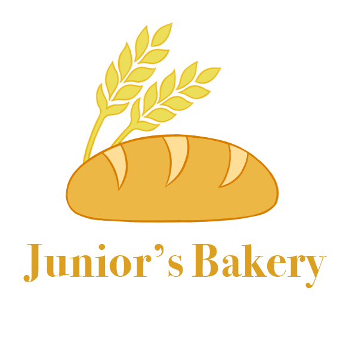
This logo was created primarily to suit the theme of bakery.
Logo Rationale
Product preview (Desktop Version)

GAMIFICATION CONCEPTS
Reward Loops Diagram
To further breakdown how the gamification system works on the website, first, the diagrams below will show how each feature works. Afterwards, it will show how it caters to the different player types.
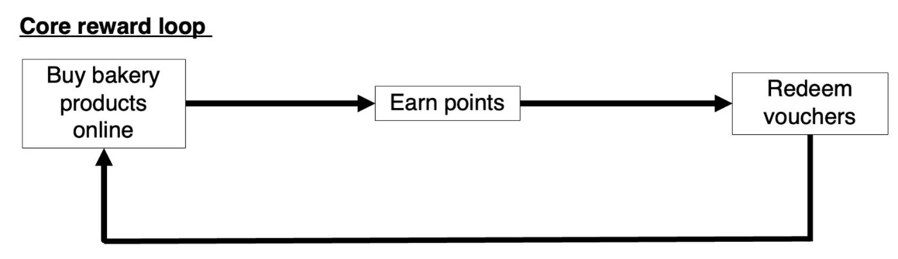
This Core Reward Loop will encourage customers to come and purchase more of the bakery products online so that they can earn more points for their vouchers.
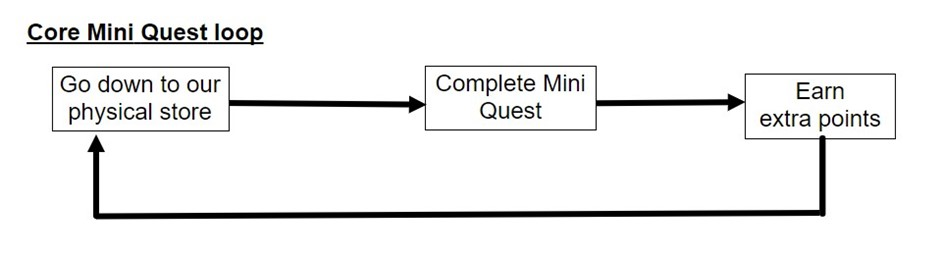
This Core Mini Quest Loop is optional for customers as it is just a small activity for them to participate and earn extra points if they want.
Basically, if they visit Junior's Bakery shop and they completed the Mini Quest, they will earn extra points. Hence, this Mini Quest targets people who are visiting the store and wants to try out this activity or people who just want to earn extra points.
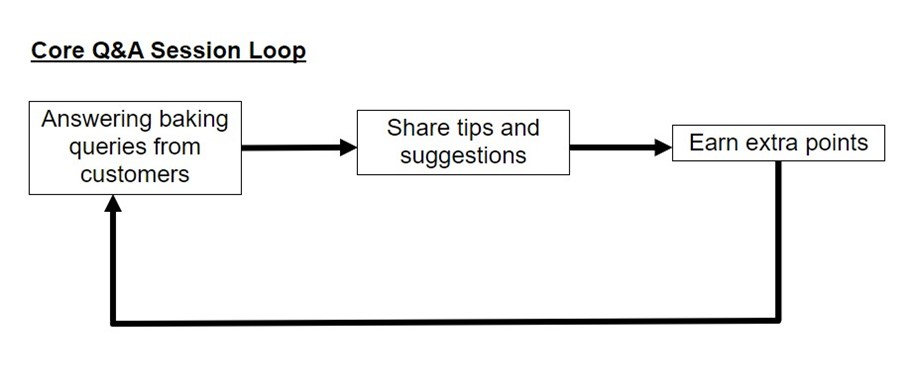
This Core Q&A Session Loop will be a platform for user to connect with the community through baking and share their experiences and tips with one another.
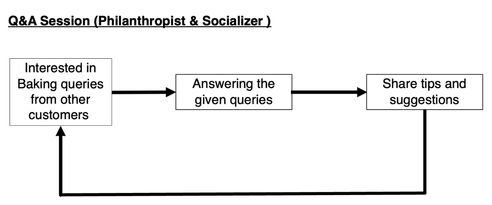
This Q&A session Loop for Philanthropist & Socializer will cater to both of them as they have a common interest and do not mind sharing their thoughts with others.
The Philanthropist answer questions relating to baking not because they want extra points, but because they are interested on the topic of baking and keen to share tips and suggestions with other customers.
While the topic will interest the Socializer as they are keen to interact with any customers based on the topic given.
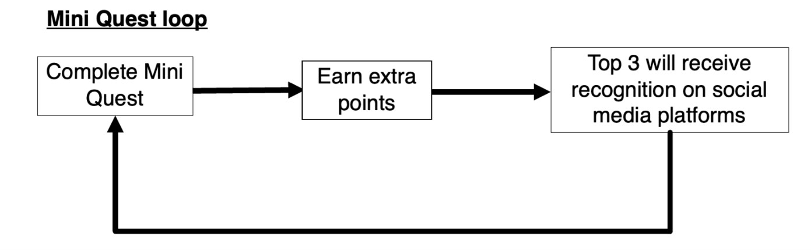
This Mini Quest Loop targets the Consumers as they would want to earn extra points and receive their recognition after successfully completing the Mini Quest. The prizes given will motivate them to achieve Top position for the Mini Quest.
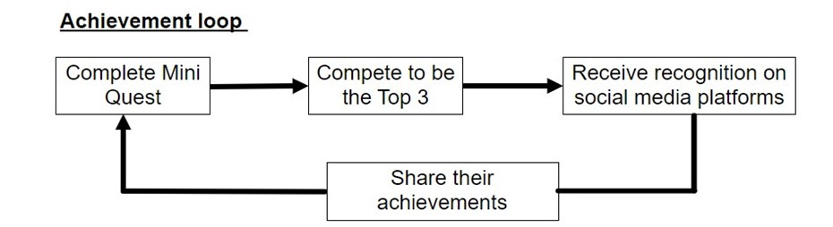
This Achievement Loop targets the Achievers as their purpose of completing this Mini Quest will be to compete against with others to become the Top 3 winners of the day and get their recognition on social media platforms, so that they can share their achievements with others.
The points that they have accumulated will then be used to redeem vouchers that can only be used in Junior's Bakery Shop. The table below shows the value of the vouchers that they can redeem based on their points. All the rewards screens will be clearly displayed on the Mobile app version.
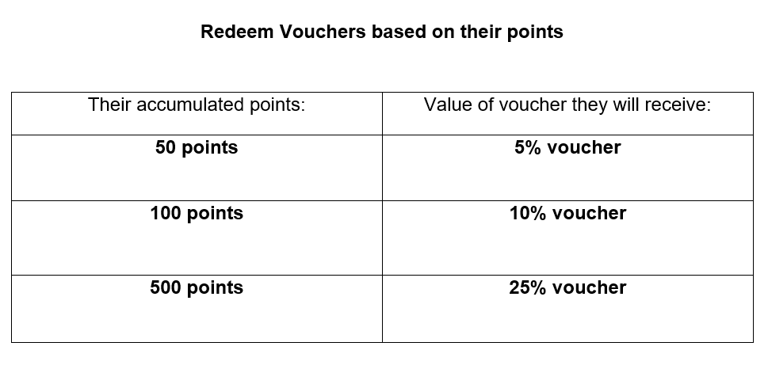
DEFINE PHASE
User Persona
To complete this project, I went to get some surveys from different users about their current experiences and pick out the most potential one for my app.
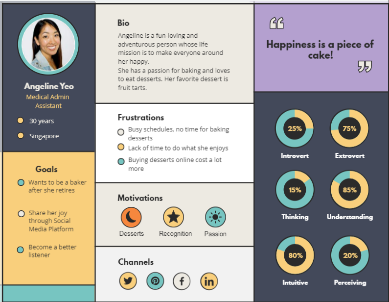
Empathy Map
In order to get a deeper understanding about User Behaviors and decisions, I used an Empathy Map to gather some of the feedbacks from the user and elaborate further on my user persona.
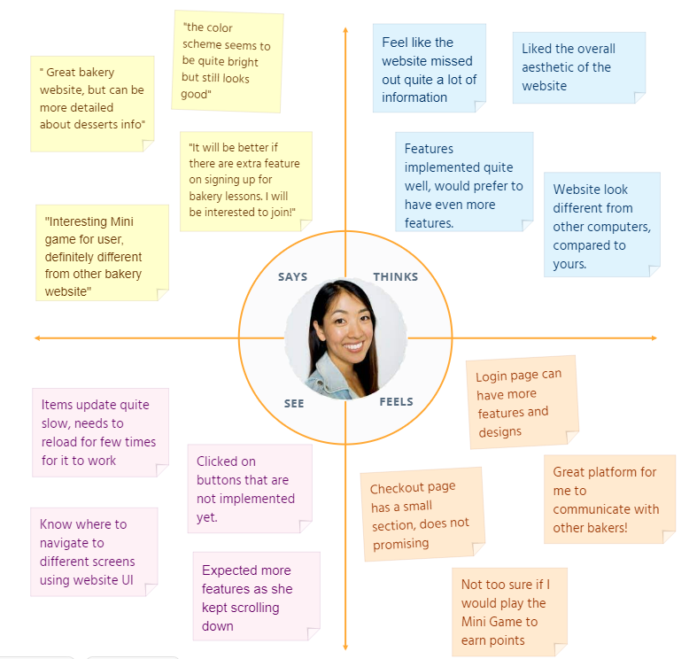
PROTOTYPING PHASE
High-Fidelity Wireframe (Desktop Version)
Based on the feedbacks and personal insights, I began designing my first wireframes using Adobe Xd.
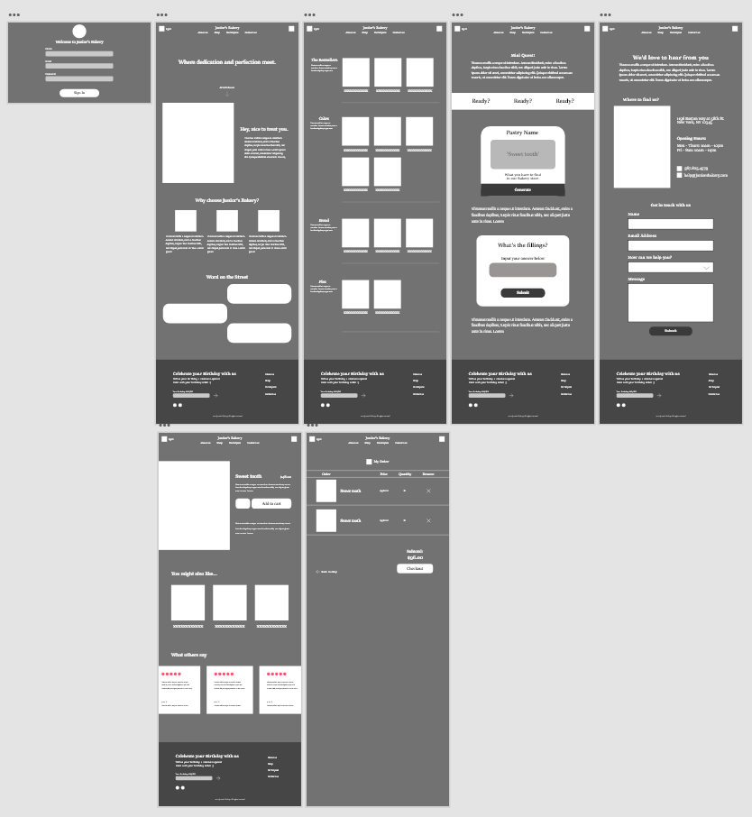
High-Fidelity Prototype (Desktop Version)
Based on the User research and analysis, I coded the final website of the Bakery Site.
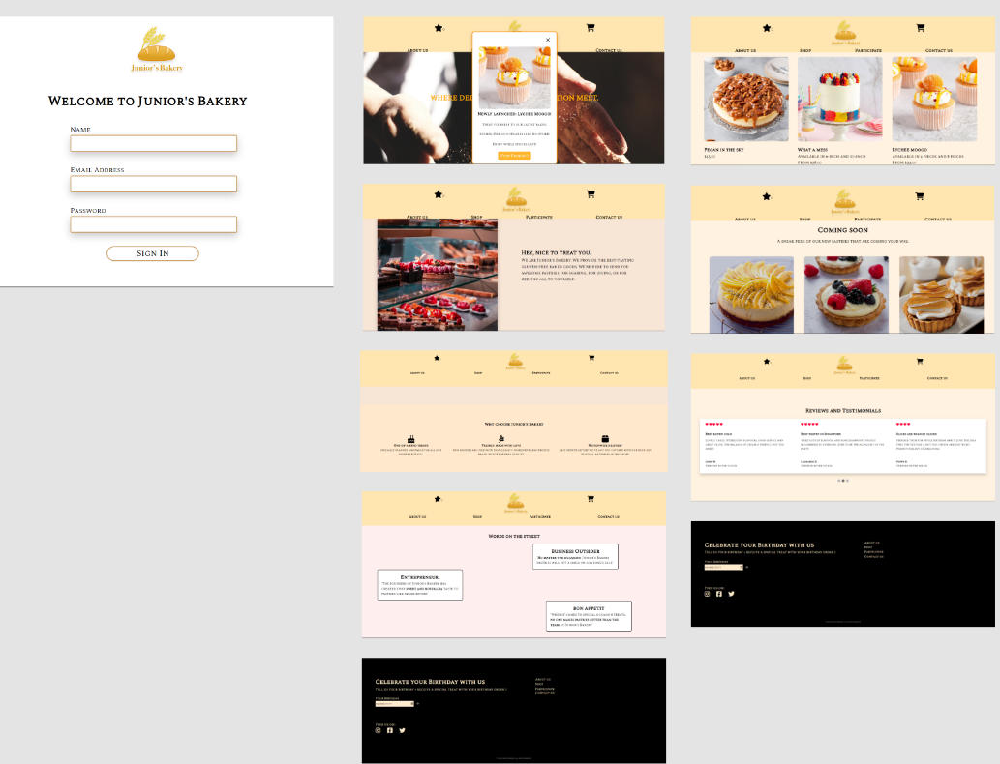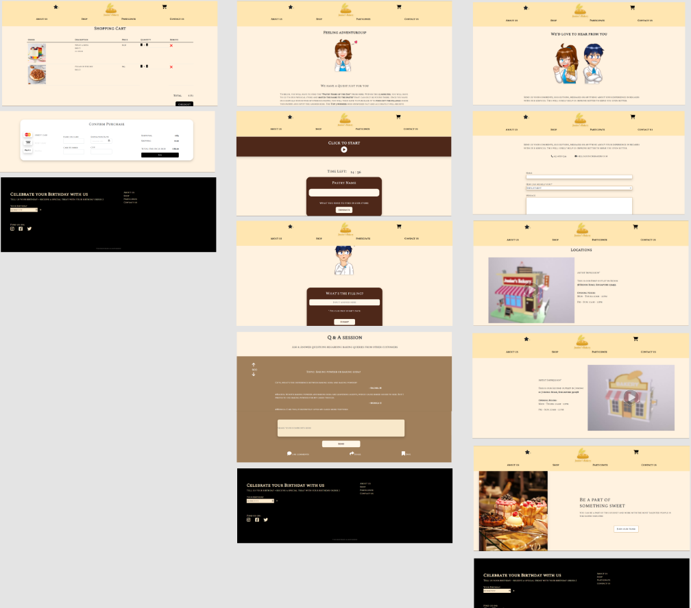
High-Fidelity Prototype (Mobile version)
This is the mobile version for the bakery website using Adobe XD. All the features here are similar to the website version but the difference is that it has short animations when navigating to pages (Loading screens etc.) and the UI designs are slightly different.
Prototype Link:
https://xd.adobe.com/view/de65ff62-ef6b-439f-a897-2e05c7ed6f1f-8b36/?fullscreen
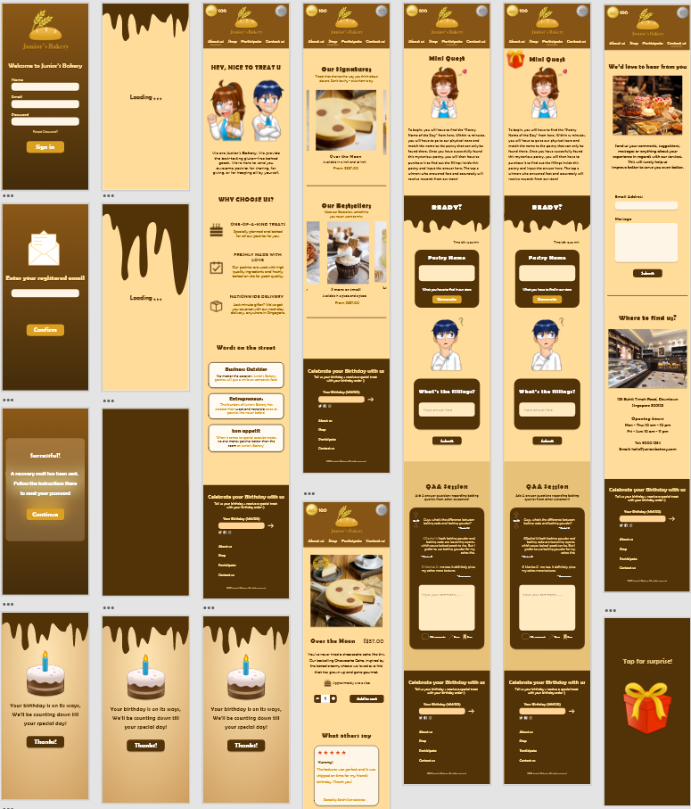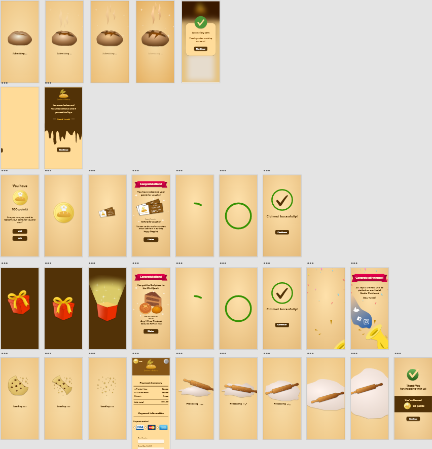
3D Bakery Shop Model
To complete this project, I went to design and model out my own version of the Junior's Bakery Shop using Maya software to model, Substance 3D Painter to texture and export to Marmoset for presentation.
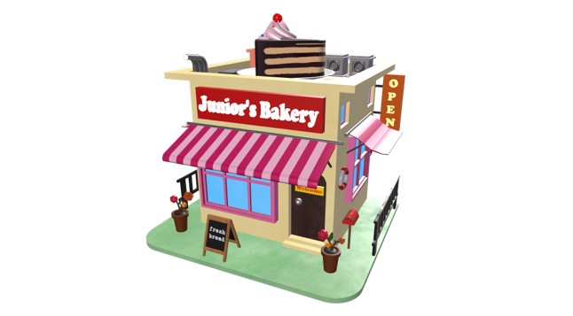